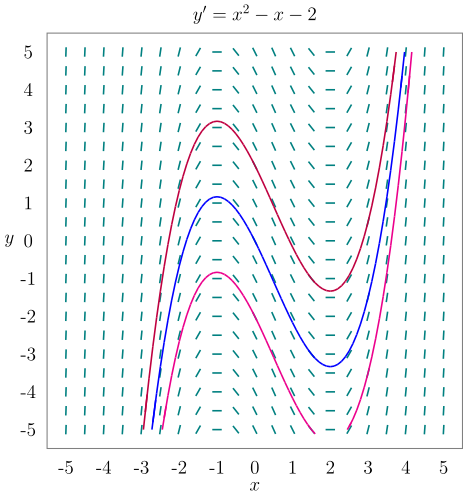
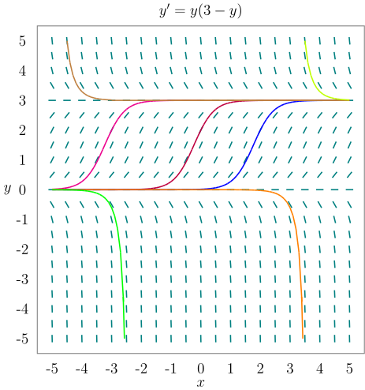
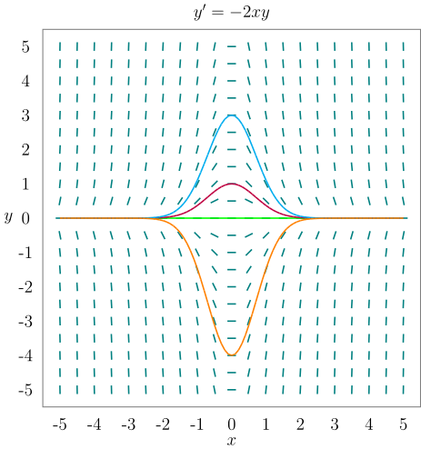

Table of Contents
Differential Equations

NARROW DISPLAY WARNING
You are most likely using a tablet or mobile device in portrait orientation. This website is best viewed using a typical computer screen with the browser window maximized.
Viewing this website in portrait orientation can cause problems with equations being longer than the screen width (you can scroll to the right), images being poorly sized, and the font size of maths text being much smaller than regular text. If your only option is a tablet or mobile device, your viewing experience will be better if you view this website in landscape orientation. You might need to refresh the page to fix any problems after rotating.
Given an ODE $y'=f(x,y)$, a direction field is a graph in the $xy$-plane with individual lines drawn at many points. The points are usually drawn at the vertices of a grid. The slope of a line drawn at point $(x,y)$ has the slope determined by the ODE at point $(x,y)$.
Draw a direction field for $y'=x^{2}-x-2$ with axis bounds between -5 and 5. Use the Direction Field Plotter by Ariel Barton to plot the direction field and some integral curves by clicking on the plot with your mouse.
Draw a direction field for $y'=y(3-y)$ with axis bounds between -5 and 5. Use the Direction Field Plotter by Ariel Barton to plot the direction field and some integral curves by clicking on the plot with your mouse.
Draw a direction field for $y'=-2xy$ with axis bounds between -5 and 5. Use the Direction Field Plotter by Ariel Barton to plot the direction field and some integral curves by clicking on the plot with your mouse.
